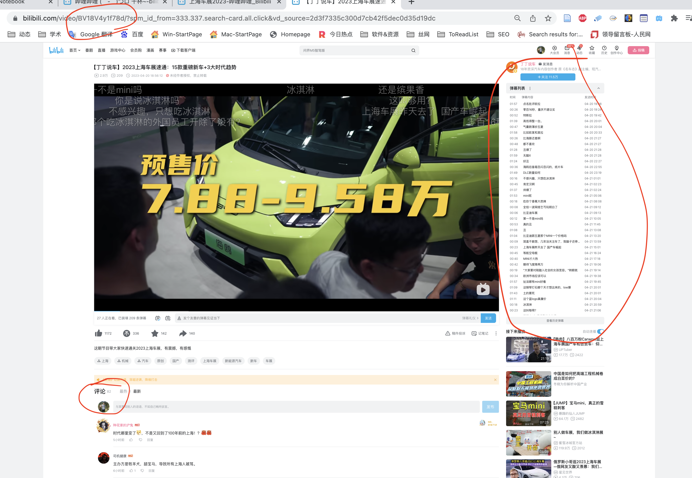
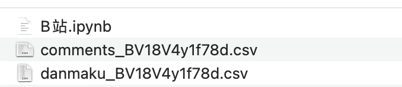
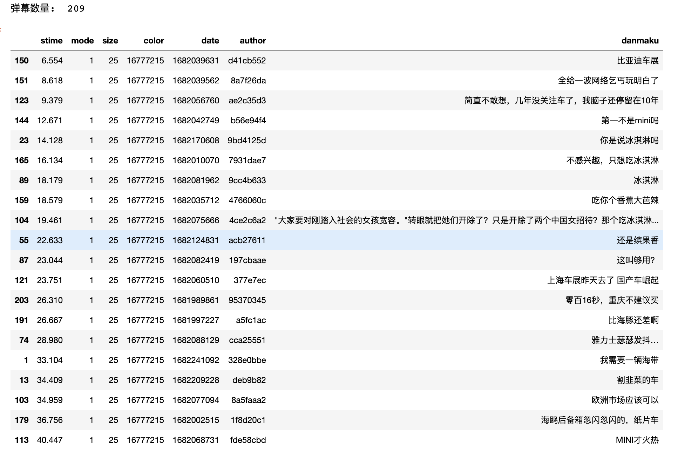
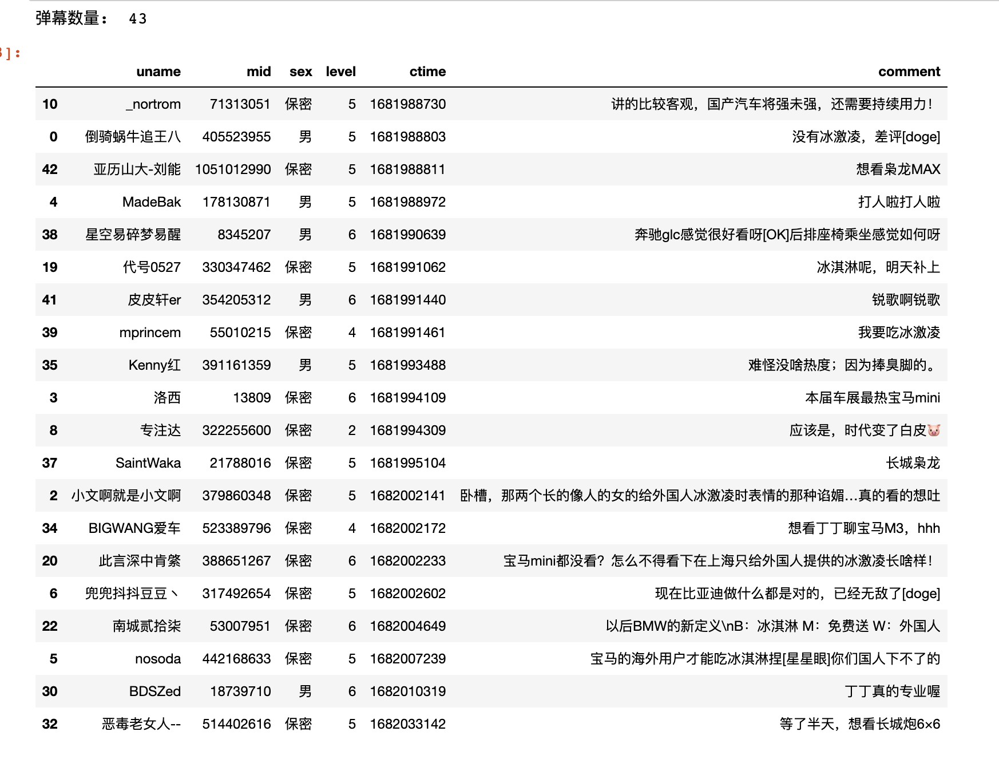

一、函数介绍
本文的采集弹幕和评论的两个函数
- get_video_danmaku(bv, encoding=‘utf-8’)
- get_video_comments(bv, max_page=10, speed=1, encoding=‘utf-8’)
二、直接上手
短期内本文的爬虫代码是有效的，但是随着时间推移，使用爬虫的人越来越多， 代码失效的概率越来越大， 建议半年后不要购买本文。
本文只演示代码的调用，定义功能函数的代码在付费部分。

上海最近有车展，以这个视频为例
https://www.bilibili.com/video/BV18V4y1f78d/
在B站中， 每个视频拥有不同的BV号，可以作为视频的ID。在上方链接中 BV18V4y1f78d 是该视频的BV号。
2.1 采集弹幕
get_video_danmaku(bv=‘BV18V4y1f78d’, encoding=‘utf-8’)
- bv: B站视频id
- encoding: 存储到csv的编码格式
get_video_danmaku(bv='BV18V4y1f78d', encoding='utf-8')
Run
******************************************************************
准备采集BV: BV18V4y1f78d 的弹幕内容
已保存1条弹幕
已保存2条弹幕
已保存3条弹幕
已保存4条弹幕
......
已保存208条弹幕
已保存209条弹幕
共保存209条弹幕
完成采集BV: BV18V4y1f78d 的弹幕内容
2.2 采集评论
get_video_comments(bv, max_page=10, speed=1, encoding=‘utf-8’)
- bv: B站视频id
- max_page: 评论最大页码数; 每页有20个评论。据此计算页码数
- speed: 爬虫速度，每间隔speed秒休息一下
- encoding: 存储到csv的编码格式
在 BV18V4y1f78d 这个视频截图期间，有82个评论， 按照每页有20个评论，所以max_page=5 。 额， 代码实际只采集到43个评论。
get_video_comments(bv='BV18V4y1f78d', max_page=5, speed=1, encoding='utf-8')
Run
*******************************************************************
准备采集BV: BV18V4y1f78d 的评论内容
已保存1条评论
已保存2条评论
已保存3条评论
已保存4条评论
......
已保存40条评论
已保存41条评论
已保存42条评论
已保存43条评论
共保存43条评论
完成采集BV: BV18V4y1f78d 的弹幕内容
三、读取数据
弹幕和评论的采集函数会以BV对csv进行命名，如下图 
尝试分别读取数据，解释数据的含义
3.1 导入弹幕数据
danmaku_BV18V4y1f78d.csv文件中的字段
- stime: 弹幕出现时间 (s)
- mode: 弹幕类型； 1～3滚动弹幕 4底端弹幕 5顶端弹幕 6.逆向弹幕 7精准定位 8高级弹幕
- size: 字号； 12非常小，16特小，18小，25中，36大，45很大，64特别大；
- color: 文字颜色; 将HTML六位十六进制颜色转为十进制表示，例如白色#FFFFFF会被存储为16777215
- date: 发送时间戳；现在距离基准时间1970-1-1 08:00:00的秒数
- author: 发送者ID
- danmaku: 弹幕文本
import pandas as pd
df = pd.read_csv('danmaku_BV18V4y1f78d.csv')
#按照stime排序
df.sort_values(by='stime', inplace=True)
print('弹幕数量: ', len(df))
#显示前20条
df.head(20)

3.2 导入评论数据
comments_BV18V4y1f78d.csv 文件中的字段
- uname: 评论者(B站用户)昵称
- mid: 评论者ID
- sex: 评论者
- level: 评论者用户等级
- ctime: 发送时间戳；现在距离基准时间1970-1-1 08:00:00的秒数
- author: 发送者ID
- message: 弹幕文本
import pandas as pd
df2 = pd.read_csv('comments_BV18V4y1f78d.csv')
#按照ctime排序
#ctime越大表示发表时间越近，越小，评论发表时间越久远
df2.sort_values(by='ctime', inplace=True)
print('弹幕数量: ', len(df2))
#显示前20条
df2.head(20)

四、获取源代码
购买即可获取本文源代码， 适合做小规模采集。 需要注意，本文爬虫代码并不完美， 例如评论83条，只采集到43条。
短期内本文的爬虫代码是有效的，但随着时间推移，使用爬虫的人越来越多， 代码失效的概率越来越大， 建议半年后的读者不要购买本文。
代码创作不易，需要的话， 点击链接进入购买页面